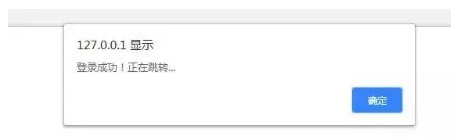
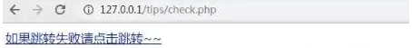
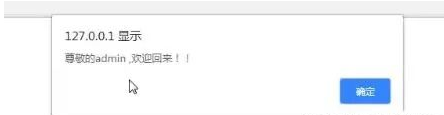
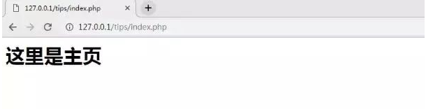

原文出处:本文由博客园博主程序媛的明天提供。
原文连接:https://www.cnblogs.com/a609251438/p/11945538.html
原文连接:https://www.cnblogs.com/a609251438/p/11945538.html
对于初入门的PHP新手来说，或许有一定的难度。建议大家先看看PHP中session的基础含义，需要的朋友可以选择参考。
下面我们就通过具体的代码示例，为大家详细的介绍PHP中session实现记录用户登录信息的具体方法。
1.简单的登录界面代码示例：
login.html
1 <!DOCTYPE html>
2 <html>
3 <head>
4 <meta charset="utf-8">
5 <title>登录</title>
6 <style type="text/css">
7 body {
8 background: url(images/bg.png);
9 }
10
11 .clear {
12 clear: both;
13 }
14
15 .login {
16 width: 370px;
17 margin: 100px auto 0px;
18 text-align: center;
19 }
20
21 input[type="text"] {
22 width: 360px;
23 height: 50px;
24 border: none;
25 background: #fff;
26 border-radius: 10px;
27 margin: 5px auto;
28 padding-left: 10px;
29 color: #745A74;
30 font-size: 15px;
31 }
32
33 input[type="checkbox"] {
34 float: left;
35 margin: 5px 0px 0px;
36 }
37
38 span {
39 float: left;
40 }
41
42 .botton {
43 width: 130px;
44 height: 40px;
45 background: #745A74;
46 border-radius: 10px;
47 text-align: center;
48 color: #fff;
49 margin-top: 30px;
50 line-height: 40px;
51 }
52 </style>
53 </head>
54 <body>
55 <div class="login">
56 <form action="check.php" method="post">
57 <img src="images/header.png"><br>
58 <input type="text" name="username" placeholder="请输入用户名！" value=""><br>
59 <input type="text" name="password" placeholder="请输入密码！" value=""><br>
60 <input type="submit" class="botton" value="login">
61 </form>
62 <div class="clear"></div>
63 </div>
64 </body>
65
66 </html>
2.简单的用于连接数据库的PHP文件代码示例：
db.php
1 <?php
2
3 $dbName = 'demo';
4 $host = '127.0.0.1';
5 $user = 'root';
6 $password = 'root';
7
8 $dsn = "mysql:host=$host;dbname=$dbName";
9 $pdo = new PDO($dsn, $user, $password);
10
11 function sql($table, $field = '*', $where = '')
12 {
13 global $pdo;
14 $sql = 'select' . ' ' . $field . ' ' . 'from' . ' ' . $table . ' where ' . $where;
15 $data = $pdo->query($sql)->fetch();
16 return $data;
17 }
这里我们定义了一个sql方法用来查询数据库表中字段，并返回数据。
那么如果有新手不清楚PHP连接数据库的方法，可以参考学习一下【PHP怎么连接Mysql数据库】的文章
3.检验用户登录信息的代码示例：
check.php
1 <?php
2 session_start();
3 include "db.php";
4 @$name = $_POST['username'];
5 @$pas = $_POST['password'];
6
7 $row = sql('user', '*', "username = '$name'");
8 if (!$row) {
9 return "用户名不存在！请检查用户名~~";
10 }
11
12 if ($row['password'] == $pas) {
13 $_SESSION['username'] = "$name";
14 echo "<script>
15 alert('登录成功！正在跳转...')
16 </script>";
17 echo "<a href='index.php'>如果跳转失败请点击跳转~~</a>";
18 header("Refresh:1;url=index.php");
19 }
这里我们要开启session，并用include引入数据库，然后用if语句判断查询提交过来的数据并将用户名提交给session来记录，即判断用户名密码是否存在及是否相等。
4.登录成功后跳转的页面代码示例：
index.php
<?php
echo "<h1>这里是主页</h1>";
session_start();
$name = $_SESSION['username'];
if ($name) {
echo "<script>
alert(\"尊敬的$name ,欢迎回来！！\");
</script>";
}else{
echo "<script>
alert('您还尚未登录！请返回登录~~')
</script>";
echo "<a href='index.php'>如果跳转失败请点击跳转~~</a>";
header("Refresh:1;url=login.html");
}
那么上述代码login.html，db.php，check.php和index.php就是一个简单的用session来实现记录用户登录信息的程序。
我们可以通过浏览器访问进行测试，首先我们可以在login登录界面，输入用户名密码，效果如下

点击login登录，跳转到check.php。

点击确定

如果跳转失败就点击上图中链接，如果跳转成功，则直接跳转到index.php主页面，显示如下图：

